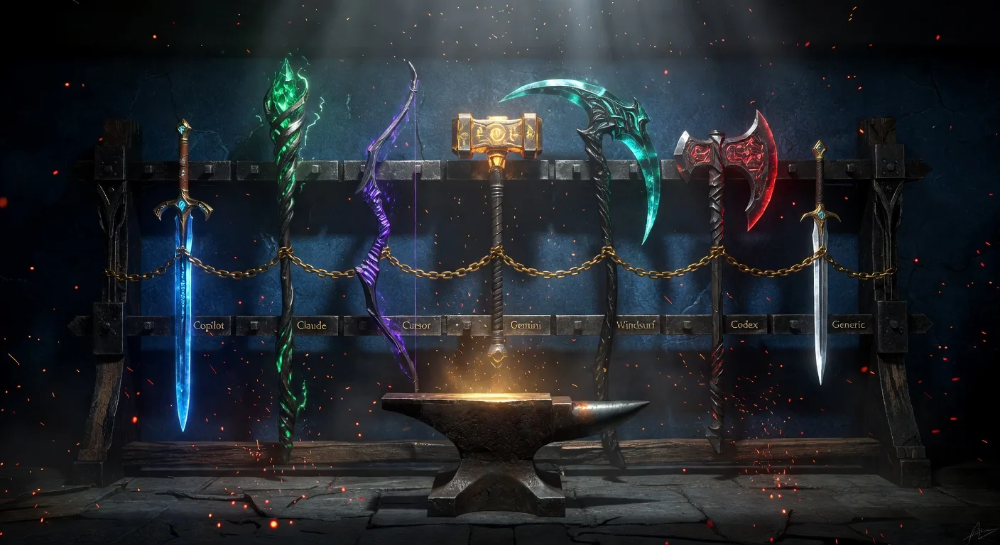

One Framework, Seven AI Agents: Why We Stopped Picking Favorites

Director @ Microsoft

Here's a conversation I've had at least a dozen times:
"Does Plan Forge work with Claude?" "What about Cursor?" "We use Gemini CLI — can we still use your guardrails?"
The answer used to be "sort of — copy the instruction files and adapt them." That was slow, fragile, and nobody did it consistently.
So we built native adapters for every major AI coding agent. One setup command. Seven agent formats. Same guardrails everywhere.
The Problem: Teams Don't Agree on Tools
Your team doesn't all use the same AI coding tool. One dev swears by Copilot in VS Code. Another prefers Cursor's inline editing. The senior architect uses Claude Code for deep reasoning. The DevOps engineer likes Gemini CLI because it's fast. The intern just discovered Windsurf.
If your guardrails only work in one tool, most of your team isn't covered. And the team members who aren't covered are the ones who produce the code that fails review.
One Command, Seven Agents
.\setup.ps1 -Preset dotnet -Agent allThat single command generates native files for every supported agent. Not generic text files that you paste into a chat — actual native configuration that each tool reads automatically at session start.
What Each Agent Gets
| Agent | Flag | Native Files Generated |
|---|---|---|
| Copilot | copilot | Auto-loading .github/instructions/*.instructions.md, agents, prompts, skills, .vscode/mcp.json |
| Claude Code | claude | CLAUDE.md with all guardrails embedded + .claude/skills/ for every prompt and agent + .claude/mcp.json |
| Cursor | cursor | .cursor/rules with all guardrails + .cursor/commands/ for pipeline steps and reviewer agents |
| Windsurf | windsurf | .windsurf/rules/planforge.md + .windsurf/workflows/ for all pipeline and review commands |
| Codex CLI | codex | .agents/skills/ with SKILL.md for every prompt and agent |
| Gemini CLI | gemini | GEMINI.md with @import syntax + .gemini/commands/planforge/*.toml + .gemini/settings.json with MCP |
| Generic | generic | .ai/AI_INSTRUCTIONS.md + prompts and agents as plain markdown — works with ChatGPT, Perplexity, Ollama, anything |
Every format includes all guardrail files, all pipeline prompts, and all 14 reviewer agents — transformed into the native format each tool expects. See the multi-agent manual for the full file-by-file breakdown.
How the Adapters Work
Each adapter follows the same pattern: take Plan Forge's canonical files (.github/instructions/, .github/prompts/, .github/agents/) and transform them into whatever format the AI tool reads natively.
Copilot (the default)
Copilot reads .github/instructions/*.instructions.md files automatically based on their applyTo frontmatter. Edit a database file and the database guardrails load. Edit a test file and the testing guardrails load. No manual attachment needed. This is the gold standard — and what every other adapter tries to replicate.
Claude Code
Claude reads CLAUDE.md at session start. The adapter generates a rich document with all guardrails embedded inline, organized by domain (security, database, testing, etc.), plus a "How to Use These Guardrails" header that tells Claude which section applies to which file type. Every prompt becomes a /planforge-* slash command via .claude/skills/. MCP tools work via .claude/mcp.json.
Cursor
Cursor reads .cursor/rules at session start and .cursor/commands/ for custom commands. The adapter generates a rules file with all guardrails embedded plus command files for every pipeline step and reviewer agent. Type planforge.step3-execute-slice and Cursor runs it natively.
Gemini CLI
Gemini reads GEMINI.md and supports @import syntax to pull in external files. The adapter generates a context document with @.github/instructions/security.instructions.md imports, plus .toml command files in .gemini/commands/planforge/ for every pipeline step. MCP auto-configures via .gemini/settings.json.
Windsurf
Windsurf's Cascade agent reads .windsurf/rules/ and .windsurf/workflows/. Same embedding pattern — all guardrails in a single rules file, all prompts and agents as workflow files.
Codex CLI
Codex reads .agents/skills/ directories with SKILL.md files. Every prompt and agent becomes an invocable skill.
Generic (any tool)
For tools not explicitly supported — ChatGPT, Perplexity, Ollama, Mistral, whatever comes next — the generic adapter generates .ai/AI_INSTRUCTIONS.md with everything embedded as plain markdown. Copy-paste it into any chat window. It works everywhere, forever.
Why This Matters for Teams
The guardrails aren't suggestions. They're structural. When every developer's AI agent loads the same architecture principles, the same security rules, and the same testing standards — regardless of whether they're using Copilot or Cursor or Claude — the code converges on the same quality bar.
No more "this PR doesn't match our patterns because I used a different tool." No more "I didn't know about the security guidelines." The guidelines load automatically in every tool. The agent can't avoid them.
- New hire on Cursor? —
-Agent cursorand they have every guardrail from day one - Senior dev on Claude? —
-Agent claudeand the same 19 reviewer agents are available - Experimenting with Gemini? —
-Agent geminiand MCP auto-configures - Using everything? —
-Agent alland every format generates in one pass
The Four-Station Multi-Agent Pattern
The seven-agent story got more interesting when Plan Forge grew into a four-station shop. The Smelt, Forge, Guard, and Learn stations don't care which AI tool walks up to them — they care that the same rules apply.
- Smelt — A senior dev runs the Crucible interview in Claude Code to harden a feature spec. The interview's critical-fields gate is the same regardless of which agent is on the other end.
- Forge — Two devs on Cursor and one on Copilot pick up slices in parallel. Same scope contract, same validation gates per slice, same Quorum Mode escalation when complexity is high.
- Guard — LiveGuard drift / secret / dependency scans run against shipped code regardless of which agent built it. Alerts route the same way to Slack / Teams / PagerDuty — the on-call engineer doesn't need to know whether Claude or Cursor wrote the offending diff.
- Learn — Every finding flows into shared memory that every agent in every tool can read on the next run.
The picker stays per-developer. The standards, the gates, and the institutional memory are shared.
What's the Same, What's Different
| Capability | All 7 Agents | Copilot Only |
|---|---|---|
| Guardrail files | ✅ embedded in native format | ✅ auto-loading by file type |
| 14 reviewer agents | ✅ as native commands/skills | ✅ as agent picker entries |
| Pipeline prompts | ✅ as native slash commands | ✅ as prompt templates |
| MCP tools (69) | ✅ Claude + Gemini + Copilot | ✅ via .vscode/mcp.json |
| Auto-load by file type | ❌ embedded instead | ✅ via applyTo frontmatter |
| Lifecycle hooks | ❌ VS Code only | ✅ SessionStart, PreToolUse, etc. |
Copilot in VS Code remains the richest experience — it's the only one with true file-type-scoped auto-loading and lifecycle hooks. The other adapters embed all guardrails at once (which is slightly less efficient in terms of context but functionally equivalent). Every agent gets the same rules; they just ingest them differently.
The Killer Feature: Unified Memory Across Agents
Here's the part most people miss — and it might be the biggest deal of all.
When you wire in OpenBrain as a shared MCP server, agents in completely different tools share the same memory. Think about what that means:
- Your Claude Code session hardens the plan and captures architectural decisions to OpenBrain
- Your Cursor session executes the slices — and searches OpenBrain first, finding every decision Claude made
- Your Copilot session runs the independent review — and queries OpenBrain for the full decision history from both previous sessions
Three different tools. Three different AI models. One shared institutional memory.
This isn't just "same guardrails everywhere." This is cross-agent collaboration through persistent semantic memory. The Claude session doesn't know Cursor exists. The Cursor session doesn't know Claude was involved. But they're both working from the same decision history because OpenBrain sits underneath all of them.
It doesn't matter which agent writes the code. What matters is that every agent knows what every other agent decided — and why.
This is what makes the multi-agent story more than a convenience feature. It's not just "pick your favorite tool." It's "your whole team's AI agents build on each other's knowledge, across tools, across sessions, across time." The decisions compound. The mistakes are learned from. And nobody starts from zero — ever.
Where to Go Next
If this multi-agent story landed for you, here's where to go deeper:
- Shop Tour — the visual walkthrough of all four stations and how they share memory across agents.
- Multi-Agent manual — the canonical reference for every adapter, every file, every flag.
- Spec Kit + Plan Forge — how the multi-agent setup pairs with Spec Kit's spec-first workflow.
- The Loop That Never Ends — the Learn station in action, auto-smelting findings back into new specs that any agent can pick up.
- Quorum Mode — what happens when 3 different models review each other's slice on the Forge station.
Try It
# Install for your stack + your team's agents
.\setup.ps1 -Preset typescript -Agent copilot,claude,cursor
# Or just install everything
.\setup.ps1 -Preset python -Agent all
# On macOS/Linux
./setup.sh --preset java --agent allCopilot files are always installed (they're the canonical source). Additional agent formats layer on top. Use one, some, or all. The guardrails are the same everywhere.
Plan Forge is free and open source. MIT licensed. Pick your stack, pick your agents, and your whole team gets the same quality gates — regardless of which tool they prefer.